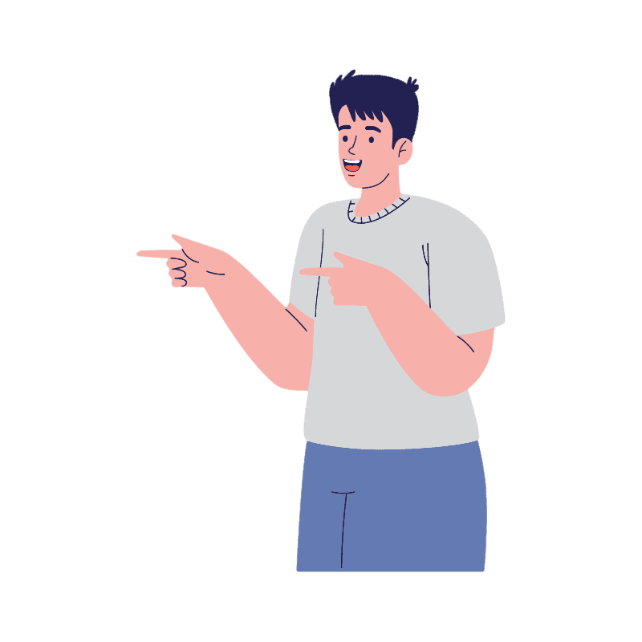

Who we are?
Here we will present the water information in a simple and innovative way in order to make it easier for all people, especially students Our site and idea explain how the cycle and path of water takes place around us, which includes everything it does It also includes climate changes, their relationship with water, and the effect of water on them Everything related to fresh water, its availability and scarcity in the world. We also explain the most important statistics related to the flow of fresh water and water ratios in the world.
